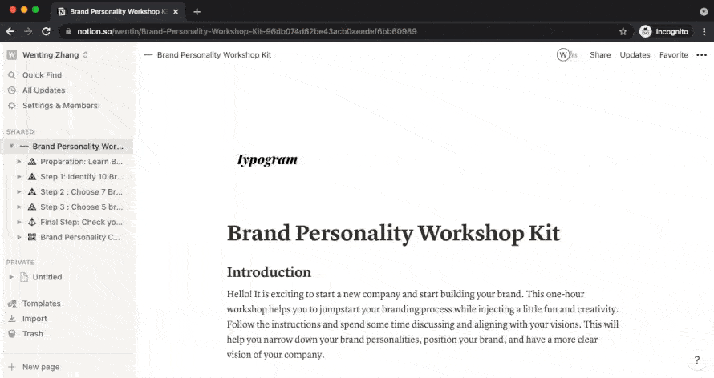
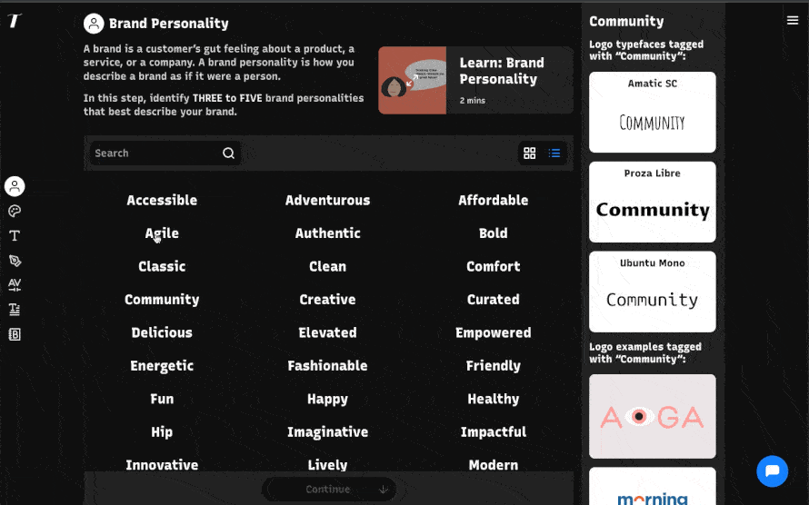
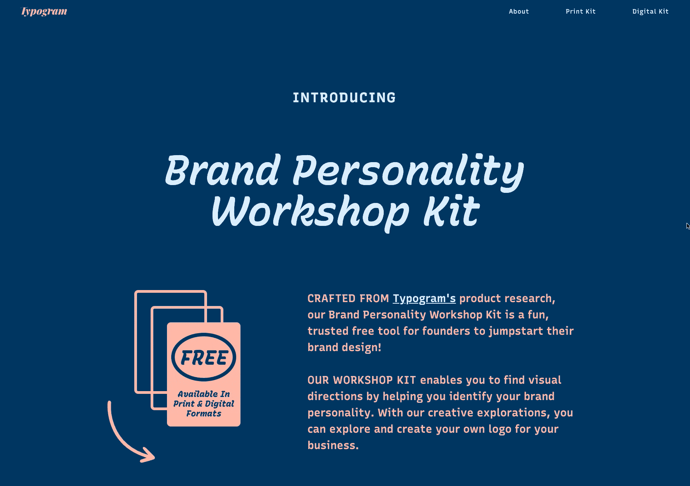

The BPWK – Brand Personality
Workshop Kit
From Product Validation to Lead Generation
A workshop and guide designed to help identify an early-stage company’s brand personality. This hands-on, DIY-friendly workshop kit allows anyone building a company to narrow down and identify potential creative directions for their branding designs.

- My Role → As a Product Designer, I...
- The Product → Introducing Typogram • Next Generation Design Tool
- Orgin Story → Product Evolution • Metrics & Learnings
As a Product Manager, I...
I created this experience with no code tools, so we leverage/learn more about cost-effective solutions like no code while conserving our technical resources and shipping this experience faster. Ultimately, this workshop validated the brand personality feature and became a mini product serving as a fantastic lead generation tool, helping us develop relationships with potential users and partnerships.

brand personality workshop kit
In the first section, users select seven terms they most resonated with from a list of brand personality words. Next, they narrowed down to the top five brand personalities using visual directions generated from words they had chosen from the previous steps. They can use their top five brand personalities to start designing their brands.
early on, we made paper prototypes like these and ran in-person user testing workshops
Product Evolution
Since many assumptions about the product exist, we prioritized shipping quickly for testing. We created this workshop using three popular No-Code tools easily accessible to users in our space: PDF, Google Slides, and Notion. Now that we have sped up the product development process using No-Code, we can focus on testing and making the UX as rewarding as possible for users.
The end product featured a main flow: users sort through different cards of brand personality, and each time, they sort and choose using various methods: First, they identify based on a list of words and then narrow down based on images. Ultimately, users land on five words as visual themes/directions for their logos. Observing from our user testing session that branding is a starting point for conversation - we designed the workshop to work for solopreneurs or a team.
We then organized user testing sessions and received great feedback. The success of testing validated the flow and design of this feature. I was proud we designed and launched a fully-fledged mini-product across multiple platforms, validating the flow of our core feature in less than two month. This workshop now functions as a fantastic lead generation tool, giving our primary tool, Typogram, growth and traffic.
Google slides Brand Personality Workshop as a lead generation tool
Brand personality feature in No-Code tool
Final brand personality feature inside the app
Brand Personality Workshop Kit growth tool now lives on its own website
Metrics

- Lead gen tool: over 100 emails collected organically since launch
- 86% campaign email open rate and over 56% click rate validate the success of the messaging
-
Validated core features and saved engineering resources
Key Takeaways
- As one of my first products, it taught me how to define the scope
-
The product development cycle taught me the importance of user input, testing, and iteration
-
How to manage and delegate work across teams with limited resource
- How we can leverage current tools like no code to be scrappy and agile
-
How to gather, organize, and oversee product user testing, collect feedback, and prioritize
-
Identified a new channel for growth through this product: live workshops at co-working spaces and accelerators. We pitched and ran this workshop in those spaces, like Yale Tsai City or the Wings, and converted users